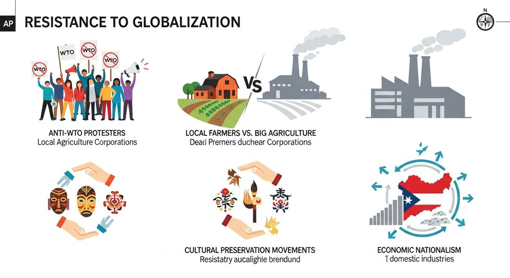

9.7 Resistance to Globalization After 1900
- LO-A: Globalization generated resistance — As economic and cultural globalization intensified in the late 20th century, it generated powerful pushback from multiple directions: labor unions who lost jobs, communities who felt culturally threatened, nations whose sovereignty felt constrained, and activists who believed global institutions served corporate interests over people. Anti-IMF/World Bank activism challenged economic globalization — The International Monetary Fund (IMF) and World Bank required developing nations to adopt free-market "structural adjustment" policies in exchange for loans — often cutting social services and opening markets. Anti-globalization activists argued these policies harmed the poor and served wealthy nations' interests, leading to protests at international summits worldwide. Local social media challenged Western digital dominance — China's development of Weibo (a social media platform) instead of allowing Facebook and Twitter represents both state censorship and cultural/technological resistance to Western digital colonization. Other regions also developed local platforms — demonstrating that even digital culture was contested territory. Resistance took many forms — From street protests to tariff policies to local social media platforms to religious fundamentalism, resistance to globalization ranged from peaceful activism to violent rejection. These responses illustrated that globalization was not inevitable or universally welcomed — it was a contested process with genuine winners and losers.
Try each question before revealing the answer.
1. What were "structural adjustment programs" and why did they generate protest?
2. What happened at the 1999 WTO Summit in Seattle and why was it significant?
3. How does China's Weibo represent resistance to cultural/digital globalization?
- Explain the various responses to increasing globalization from 1900 to present — including anti-IMF and anti-World Bank activism and the development of locally developed social media
Tap a term for its definition.
-
Definition: A broad coalition of activists opposing the policies and institutions of economic globalization, particularly the IMF, World Bank, and WTO. Significance: Peaked in the late 1990s–early 2000s with major protests at international summits; represented organized popular resistance to the free-market global order.
-
Definition: International organization providing loans to countries facing financial crises, typically requiring free-market "structural adjustment" reforms as conditions. Significance: CED illustrative example of resistance target; critics argued IMF conditions harmed poor populations and served wealthy-nation interests.
-
Definition: International institution providing development loans to poorer nations, requiring market-oriented policy reforms. Significance: CED illustrative example of resistance target; like the IMF, was a major target of anti-globalization protests for imposing conditions critics viewed as serving corporate and wealthy-nation interests.
-
Definition: IMF/World Bank-required policies (cutting government spending, privatization, trade liberalization) imposed on developing nations in exchange for loans. Significance: A major cause of anti-globalization protest; critics argued these policies harmed the poor while benefiting foreign investors and corporations.
-
Definition: A Chinese social media platform, similar to Twitter, developed domestically as Western platforms were blocked in China. Significance: CED illustrative example of "locally developed social media"; represents China's assertion of digital sovereignty and a form of resistance to Western-dominated digital globalization.
-
Definition: A nation's or community's ability to maintain and develop its own cultural identity independent of external cultural influences. Significance: A driving concern behind many forms of resistance to cultural globalization — the fear that local cultures would be overwhelmed by more powerful (often American/Western) cultural products.
🌐 Why Did Globalization Generate Resistance? (KC-6.3.IV.iv)
The AP CED presents globalization as a contested process: "Responses to rising cultural and economic globalization took a variety of forms." To understand these responses, it helps to understand what people were resisting — and why the gains of globalization did not translate into universal acceptance.
Economic globalization produced real costs alongside its real benefits. In wealthy nations, manufacturing workers lost jobs as production moved to lower-wage countries. Communities built around steel mills, textile factories, and automobile plants were devastated. In developing nations, IMF and World Bank-required "structural adjustment" policies — cutting social services, privatizing public utilities, opening markets to foreign competition — often harmed the poor while benefiting foreign investors. Small farmers couldn't compete with subsidized agricultural imports from wealthy nations. Local industries were undercut by cheaper foreign goods flooding newly opened markets.
Cultural globalization also generated anxiety and resistance. The dominance of American films, music, and consumer brands felt to many communities like a threat to local traditions, languages, and identities. Religious communities across traditions worried that Western secular consumer values were eroding moral frameworks. Nationalists resisted the apparent erosion of sovereignty as international institutions (WTO, IMF) increasingly constrained what national governments could do. All of these grievances, sometimes in combination, produced the varied forms of resistance the CED describes.

Image credit not specified.
AI-generated illustration (Google Gemini, 2025), commercially licensed.
🏦 Anti-IMF and Anti-World Bank Activism (KC-6.3.IV.iv)
The most prominent form of economic globalization resistance was organized activism against the international financial institutions — particularly the International Monetary Fund (IMF) and the World Bank — that the CED explicitly names as illustrative examples.
Both institutions were created at the 1944 Bretton Woods Conference to stabilize the global economy after WWII. The IMF was designed to provide short-term loans to countries facing balance-of-payments crises; the World Bank to provide longer-term development finance. Over time, both became major vectors of economic globalization by requiring free-market "structural adjustment" policies as conditions for their loans. Nations that needed IMF assistance had to agree to: cut government spending (reducing subsidies on food, fuel, and healthcare; slashing public sector employment); privatize state-owned enterprises; eliminate trade barriers; and deregulate financial markets. The theory was that these market reforms would promote growth. Critics argued the actual effects were consistent: cuts to social programs harmed the poor; privatization of utilities raised prices for basic services; trade liberalization exposed domestic industries to competition they couldn't survive; and the resulting economic disruption caused unemployment and social unrest.
Anti-IMF activism escalated dramatically in the 1990s. Protests accompanied virtually every major IMF, World Bank, and WTO summit. The 1999 WTO Ministerial Conference in Seattle ("the Battle of Seattle") drew tens of thousands of protesters and effectively shut down the negotiations. The 2001 G8 Summit in Genoa, Italy saw hundreds of thousands of protesters and violent confrontations that left one protester dead. Organizations like Jubilee 2000 campaigned successfully for debt cancellation for the world's poorest nations, arguing that IMF-imposed structural adjustment conditions on indebted nations perpetuated poverty rather than alleviating it.
The intellectual framework of anti-IMF activism drew on economists like Joseph Stiglitz — himself a former World Bank chief economist — who wrote Globalization and Its Discontents (2002), arguing from inside the system that IMF policies were economically flawed and often worsened the crises they were supposed to fix. The East Asian financial crisis of 1997–98, where IMF austerity measures imposed on Thailand, Indonesia, and South Korea were widely seen as deepening and extending economic pain, was a major catalyst for this critique.
💻 Locally Developed Social Media: Digital Resistance (KC-6.3.IV.iv)
The CED identifies a distinctive form of cultural resistance to globalization: the "advent of locally developed social media", using Weibo in China as the illustrative example. This development represents the intersection of technological nationalism, state censorship, and cultural assertion.
When Western social media platforms — Facebook, Twitter, YouTube, Google — became global phenomena in the 2000s, China blocked them all through the "Great Firewall" — China's sophisticated internet censorship and filtering system. In their place, Chinese companies developed domestic equivalents: Weibo (a microblogging platform similar to Twitter), WeChat (messaging and social network similar to WhatsApp and Facebook combined), Baidu (search engine comparable to Google), and Alibaba/Taobao (e-commerce comparable to Amazon). By 2020, Weibo had over 500 million registered users and WeChat had 1.2 billion — creating a massive alternative digital ecosystem that operated entirely outside Western-dominated platforms.
The Chinese case was complex: it was simultaneously state censorship (the government could monitor and censor content on domestic platforms more easily than on foreign ones) and technological self-sufficiency (China developed world-class technology without dependence on Western corporations). Whether to interpret it primarily as political repression or as cultural/technological resistance to Western digital dominance is genuinely contested — both are true. But in the CED's framework, it illustrates that even in the digital sphere, globalization was not total: nations could and did develop alternatives to Western-dominated platforms.
Other regions also saw the development of locally rooted social media alternatives: VK (Russia's social network), various platforms in South Korea, and regional platforms across the Global South. The rise of TikTok — owned by Chinese company ByteDance but achieving genuine global popularity — further complicated the narrative, as a Chinese-origin platform became a global cultural force, reversing the typical direction of digital cultural flow.
🌍 A Spectrum of Responses
The CED notes that responses to globalization "took a variety of forms" — and this variety is genuinely broad. Beyond the two specific examples (anti-IMF activism and locally developed social media), resistance to globalization took many additional forms:
- Economic protectionism — many nations and political movements pushed for tariffs, subsidies, and trade barriers to protect domestic industries. Even enthusiastic free-trade nations maintained protections in strategically important sectors.
- Cultural protectionism — France famously required a minimum percentage of French-language content on television and radio to protect French culture from English-language dominance; many nations restricted foreign ownership of media; some governments supported indigenous-language broadcasting.
- Religious revivalism — from Islamic fundamentalism to Hindu nationalism to Christian evangelicalism, religious movements worldwide partly represented reactions against the secular consumer values spread by cultural globalization.
- Nationalist populism — political movements from the 1990s onward exploited resentment of globalization's costs (job losses, cultural change, perceived loss of sovereignty) to build electoral coalitions opposing international integration.
- Alternative globalization — some activists didn't want to stop globalization but to make it fairer — through fair trade, debt cancellation, stronger labor and environmental standards in trade agreements, and greater developing-nation representation in international institutions.
Nothing added yet. To attach a Google NotebookLM audio overview, video overview, or infographic to this topic: open this file — build/data/content/ap-world-history/9-7.json — and add an entry to notebookLmResources with a title and a shareable link (or paste an embed <iframe> directly into this block in the generated HTML file if you're editing the page by hand instead).
- Most responses were violent protests against international financial institutions.
- Most resistance came from environmental groups concerned about climate change rather than economic inequality.
- Resistance was limited to developing nations that lacked the resources to compete in the global economy.
- Responses took a variety of forms, including activism against international institutions and the development of locally produced alternatives to globalized products and platforms.
- these institutions caused the 2008 global financial crisis through reckless lending practices.
- activists believed these institutions imposed free-market policies that harmed developing nations' populations while serving wealthy-nation and corporate interests.
- the IMF and World Bank refused to provide loans to nations developing nuclear weapons programs.
- these institutions were controlled by the Soviet Union during the Cold War, generating Western resistance.
- free-market competition producing superior products to Western alternatives.
- the spread of democratic communication platforms in authoritarian states.
- the response of locally developed social media to increasing globalization.
- how multinational corporations spread consumer culture globally.
- The WTO's policies generated opposition from groups with different concerns — labor (job losses), environmentalists (regulatory erosion), and developing-nation advocates (unfair rules) — who found common cause against the same institution.
- Participants were all from developing nations harmed by WTO trade rules.
- All participants shared identical ideological beliefs about the appropriate role of government in the economy.
- Participants had been organized by the Soviet Union to undermine Western economic institutions.
- The United States establishing the Federal Reserve to regulate domestic banking
- France requiring a minimum percentage of French-language content on television to protect French cultural identity
- The World Trade Organization arbitrating trade disputes between member nations
- Bollywood producing films for Indian domestic audiences
📝 My Notes (edit this yourself — no AI needed)
This box is yours. Open this page's HTML file directly (in GitHub's editor or any text editor), find the <!-- MY-NOTES-START --> comment below, and type between the markers — corrections, extra context for this year's students, a link, anything. Changes show up as soon as you save and re-publish the file — nothing else on the page will change.
(Add your own notes, corrections, or extra context here.)